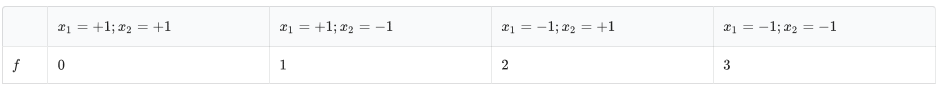

在人类的神经系统中，每个信号都可以用 $-1$ 或 $+1$ 来表示。这些信号组合起来最后形成了喜怒哀乐，酸甜苦辣，红黄绿蓝等各种各样的复杂信息。纳米探测科技的突破让生物学家可以测量大脑中特定区域的完整逻辑功能。然而超大数据的处理一直是令 H 教授头疼的问题。
假设一个逻辑单元接受 $N$ 个信号输入，并产生一个代表某种意义的实数值 $r$。那么总共可能的情况有 $2^N$ 种。
通过长时间的累积测量，H 教授可以准确地获得输入信号与 $r$ 的关系表：$f\colon {-1,1}^N \rightarrow \mathbb{R}$。
然而进一步研究发现，神经元的运算方式可以被建模为人们熟知的多项式。由于一个输入信号值的平方一定为 $1$，所以我们可以用不含幂的 $2^N$ 项的多项式来唯一表示任何一个逻辑 $f$。例如以下涉及两个信号 $x_1, x_2$ 输入的逻辑 $f$：

可以写成 $f(x_1,x_2) = 1.5 - 0.5x_2 - x_1$。
研究一个逻辑单元的多项式形式对了解大脑工作十分有意义，于是小 M 决定帮 H 教授把测量出的逻辑关系表全部转换成多项式的形式。这么简单的工作一定难不倒编程能手小 M 的吧？
第一行是 $N$，
接下来共 $2^N$ 行，每一行是一组逻辑输入和一个对应值，代表 $x_1,\ldots,x_n$ 的符号，以及对应的 $r$。详见样例。
数据保证所有逻辑值的绝对值不超过 $100$，且不包含超过 $2$ 位小数。保证所有逻辑的输入串都互不相同。
最多 $2^N$ 行，代表多项式每一项的系数，如果答案为整数，输出整数形式。
否则输出最简分数形式。如果系数恰好为 $0$，则省略整行。
变量和系数用空格隔开，常数项不用加空格。
顺序按多项式的字典序：常数项优先；没有常数项时，$x$ 下标更小的项优先，当两项含有相同最小下标时，排除掉最小下标 $x$ 以后，以同样规则递归比较。
例如：$1,x_1,x_1x_2,x_1x_2x_3,x_1x_3,x_2,x_2x_3,x_3$。详见样例。
2 ++ 0 +- 1 -+ 2 -- 3
3/2 -1 x1 -1/2 x2
3 --- -1.0 -++ -1.0 +-+ -1.0 ++- -1.0 --+ 1.0 -+- 1.0 +-- 1.0 +++ 1.0
1 x1x2x3
对于 $100\%$ 的数据，$1 \leq N \leq 20,\ |r| \leq 100,\ 100r \in \mathbb{Z}$。
请注意输入输出的效率。
 Comet OJ
Comet OJ